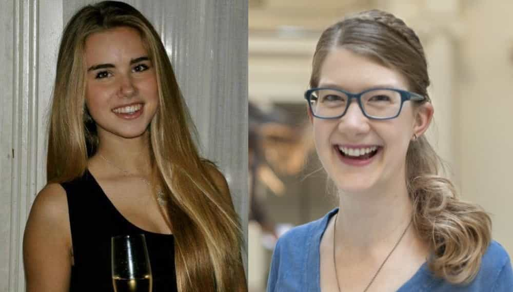
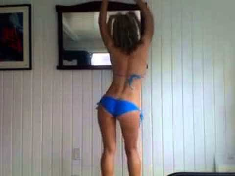

< < < Back
Hypocritical Jezebel Feminist Erin Gloria Ryan Thinks Women Are Weak – Return Of Kings
Erin Gloria Ryan, ‘ferocious’ (lol) feminist writer and middle name flaunting douchette extraordinaire, has released yet another anti-feminism article on Jezebel, that bastion of privileged white women who hate themselves and other females. Seriously, like, check out this other recent article from Erinzo which is dripping with awesome sauce smugness over how a cuter privileged white girl named Axelle Despieglaere was offered a modelling contract but lost it because she took a picture of a hunting trip she went on once. WAY TO GO AXELLE DESPIEG (more like PIG amirite) LAERE! Maybe in the future you’ll learn not to give all the white girls jealous of your looks and joyful nature any ammunition to shoot you with. Isn’t it so feminist when women tear each other apart? Seriously, screw Axelle for daring to be prettier than Erin shooting a moose or w/e she did.
WORSE THAN HITLER! AMIRITE?!
At this point most people of rational thought, regardless of their thoughts on or stance in the sex wars, can agree that the writers of Jezebel are anti-feminist. At the least, they are not the proponents of a feminism which aims to create strong, independent woman. Take for example Erin Ryan’s article about the harassment women receive on Youtube. As EGR so stridently warns her fellow femmes:
Woman-types: ever wondered what it would feel like to be catcalled by men who probably lack the upper body strength to work construction? Then you should start a YouTube series!
Despite the fact that the video hosting giant has featured three popular female vloggers in its recent ad campaign, being a woman who dares show her face on YouTube is a risky move indeed, unless you’ve got skin thicker than that fake dinosaur idiots thought Steven Spielberg murdered.
So what got under Erin’s skin so much? Was some precocious thirteen year old girl’s video on her drawing methods torn apart by paedophiles demanding her to get naked? Was a brave woman’s video of her wearing unflattering clothes in public mocked heartlessly by the patriarchal fashion police? No. She’s angry that beauticians aren’t getting the same reverence and respect as people who post videos about how to change your transmission or how particle physics work.
No matter what women do on YouTube, they can’t really win. Beauty vloggers have bigger audiences, more lucrative endorsement deals, and are somewhat insulated from the sort of ire flung at comedians and commentators and other How-To’ers. But because their main focus is on hair and makeup, they’re sometimes viewed as somehow intellectually inferior to their non-beauty vlog counterparts (according to The Daily Dot, beauty vloggers were excluded from a Women of YouTube panel at this weekend’s VidCon, an event where YouTube’s most watched and subscribed talk about the highs and lows of vlogging).
But no matter the focus of their content, female vloggers who spoke out at VidCon expressed frustration with the nature of abuse that focuses on their physical appearance rather than on the actual content of their videos. If they’re physically attractive, they’re bombarded with creepy requests to do things like slowly put on silk stockings and post the video (ostensibly so some weirdo can fap to it). If they’re not conventionally attractive, male commenters jump on every opportunity to let the woman in question know that she makes their particular boner unhappy and she should go away forever. If she’s of average attractiveness, commenters use the commenting space to have debates about her fuckability.
So commentator’s on women’s videos talk about the woman’s appearance and sexual attractiveness, or conversely they point out their flaws or lack of looks. Even if we ignore the fact that it’s human nature for people to judge one another’s looks (how many games of Kill Fuck Marry has Erin played, I wonder), female content creators do not have a monopoly on rude and hateful comments on Youtube.
A user by the name of Scott Herman has a channel about fitness, and has helped plenty of people (including myself) with their fitness goals. He also has a slightly light sounding voice and prefers to exercise without a shirt on. On almost anyone of his videos you’ll find people calling him gay, calling him a faggot, and telling him to put a shirt on. Almost no user with any amount of video views on Youtube is a stranger to rude comments. In fact, almost anyone who has spent more than a day on the internet has undoubtedly been the subject of hateful comments directed personally at them. It’s just what the internet is. To fight that is to fight human nature. Good luck winning that war.
Erin continues:
Science vlogger Emily Grasslie of The Brain Scoop weighed in after famously smacking down her looks-obsessed male critics in recent months, telling VidCon attendees that she mostly just ignores the trolly mctrolls to avoid risking undermining her credibility.
“I feel like I can’t take [sic] about my image on channel without compromising the value of my educational message,” she explained, going on to detail how people ask her every day about her hairstyle or clothing featured on YouTube instead of the content of her videos. “I have made a conscious decision to never answer those publicly. I’m so afraid that once I start letting in that side of my personality that people will no longer care about the educational message. I think that insecurity is totally a product of the society I grew up in.”
But the fact that women deal with this — still! In 2014! — is an incredible bummer. No matter where we go and what we do and what we say, there’s some guy standing by to shout about whether or not they want to see us naked.
Men deal with it too, but this is Jezebel we’re talking about. They could care less about men, but not that they really care about women either—they only show concern about those women they don’t feel threatened by or whose story fits their self centered narrative. Again, why is Axelle worthy of Erin’s scorn and Emily Graslie is not? Hmm…let’s compare them and try and find out.

Gee, I wonder why Erin likes Emily over Axelle. If the looks of the two were reversed, would Erin still be glad Axelle lost her job opportunity? Going through her article history, it’s obvious Erin’s motto is: ‘I’m a feminist … as long as she’s not prettier than me’. If it was Emily losing the modelling contract because she posed with a dead Gazelle, Erin would be writing an article defending her and probably rant about how it’s so patriarchal to punish women for doing manly things like hunting, and that all those MEN at L’oreal were just threatened by a strong woman.
[On a side note, Emily is pretty passable. If she took those glasses off I’d sure like to lie her down in the grass! MISOGYNY FTW!!!]
In the last of Erin’s short article of outrage, she says:
One of the more irritating aspects of that sort of comment is that the people making them are 100% convinced that the worst thing a man can say to a woman is that he doesn’t want to have sex with her, that the most important thing to a woman is how their weens feel about her. Why else would they wear makeup? Heels? Why would they slather on sunscreen every morning?
Guys, guys, guys. It’s not for you. More often then not, women do it for each other. No one gives a shit about your boner.
I’d imagine that idea, expanded into 4 minute YouTube video form, would likely garner more than its share of rape threats.
Uh huh. Women wear make up, heels and great clothes for each other. That makes 100% sense. Actually, in a way Erin is right about that: women do try and look best because of other women. They do it because they want to make other women feel jealous when they attract a good looking guy by looking like a bangable human being. There’s nothing better for many woman out there than making her ‘sisters’ jealous of the men she gets. Erin is one of them.
For Erin, it doesn’t matter that men get just as and often much worse forms of abuse, or that men often outright lose their jobs for daring to post their opinions (even if it was just retelling a joke from a popular cartoon; in this case South Park) on the internet. Hell, men lose their jobs for having private conversations between each other face to face. Of course Jezebel came out and defended Adria Richards, the woman who helped a man fired because she listened into his private conversation. Which is hilarious in hindsight since the same woman was fired for making sexual comments of her own to a hell of a lot more people. But only women who suffer from other’s hateful remarks matter in Jezebel’s world and, of course, only if the writer perceives them to be uglier than her.
Yet that’s not the main point of this article. What really cheeses me off about Erin Ryan (besides her juvenile attack on a fellow female simply because she’s prettier) is that Erin seems to think women, all women, are fragile little creatures who need to be protected from words. Erin obviously judges others by herself, and Erin is a vindictive thinned skinned hypocrite. Just because Erin, and the other spoiled privileged white women like her, cannot handle criticism doesn’t mean that every other woman cannot. It’s incredibly belittling to other women to say that female content creators on Youtube, and other parts of the web, need to be protected from naughty words. Erin is insinuating that all women are so weak that a half coherent textual message written by a person they’ll never meet left on an internet video created by said woman is enough to harm her.
Is it? Are all women so weak that they need a completely totalitarian system enacted to squash the free speech of others just so they can make a video about applying eye-liner without reading someone basically saying ‘I would have sex with you’? Of course not. Women by and large are not that weak. A good example of a woman who knows just what the internet is all about is internet comedian Jenna Marbles, one of the most subscribed to content creators on Youtube (so much for women being unable to ‘make it’ on Youtube). The amount of vitriol, sexual commentary and general hatred she gets is massive (a fair amount of it from women), and yet somehow she’s still around. Which is great because Jenna loves tearing apart hypocritical feminism like that espoused by Jezebel writers. Jenna is also pretty sexy, so I’m surprised Erin hasn’t tried to rip her apart either.

Female comedy at it’s finest.
Feminists like Erin Ryan are the reason most people don’t take women’s issues seriously, even the few of actual concern. Women are not so weak that some insults on the internet create genuine emotional trauma for them. There are real problems afflicting women, and if it intends to survive as something more than a movement of narcissistic clowns, feminism needs to jettison the privileged white women like Erin Ryan who are running it and get around to solving the real problems.
Women of strength and character are rejecting feminism almost out of hand at this point and it’s not hard to see why when Stopping Bad Men On The Internet Saying Bad Things constitutes a genuine cause for it’s adherents. Most people find it pretty hard to take a movement whose purported aim is to create STRONG INDEPENDENT WOMEN seriously when those who speak for it are driven to near tears because Xx420billynubs69xX said ‘id fuk her holes red’ in a comments section. If feminists are adults, they need to start acting like it.
Read More: Did Jezebel Pick Emma Carmichael For Editor Over A Black Woman Because Of Her Looks?


{kind=link}
{kind=link}
{kind=link}